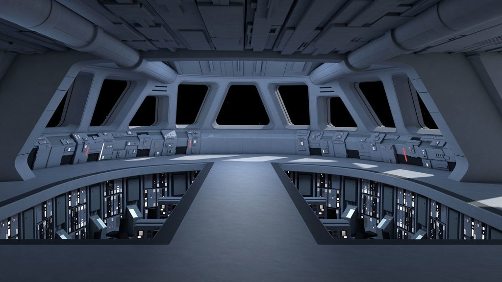

Le croiseur stellaire est un vaisseau de guerre imposant, véritable symbole de la puissance impériale ou républicaine selon l’époque. Armé de multiples canons turbolaser et équipé de boucliers défensifs avancés, il peut transporter des chasseurs TIE ou des escadrilles de soldats prêts à l'assaut. Véritable forteresse flottante, ce mastodonte est capable de semer la terreur ou d'assurer une protection inébranlable dans les confins de la galaxie.
|  |